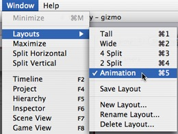
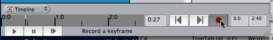
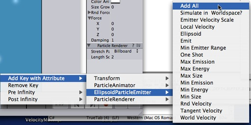
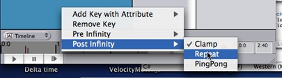
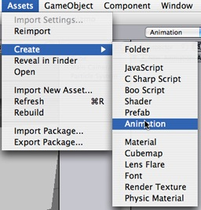

Previous
Previous
Animations are best imported from art programs but can also be created inside Unity.
To import an animation from your art package just drop in your model files.
When you place your model file in unity's project folder it will automatically appear in the project view and you can drag it to the scene. The animation on all objects in the scene is imported automatically and you wil see the animation playing when you hit play.
For more information about animating characters or importing animations see the Character Animation section.
Creating animations inside Unity
1. Switch to the animation layout. This will display the Timeline View. In the Timeline you will create and modify animations.

2. Select the object you want to animate in the scene view.
3. Click on the record button in the animation Timeline

4. Select another time in the Timeline by clicking on it. Then move the object some where else and hit record again.
If you hit Play now, your object will follow the animation you just created.
Hints
-
By default only the transform's position, rotation and scale is included in the animation.
Right-click on the Timeline and use the Add Key With Attribute menu to add other animatable properties of the selected object to the animation.

- You can scrub on the timeline by dragging a keyframe with the center mouse button
- Post Infinity is used to define behaviour of the animation after the last keyframe. Right-click on the timeline and select Post Infinity -> Repeat from the context menu.

- Sometimes it is useful to create animations which are shared among all objects.
To do this, create an animation clip in the assets menu.

Then drag the animation clip on an object. Then you animate the object. Then you can drag the animation clip on other objects.